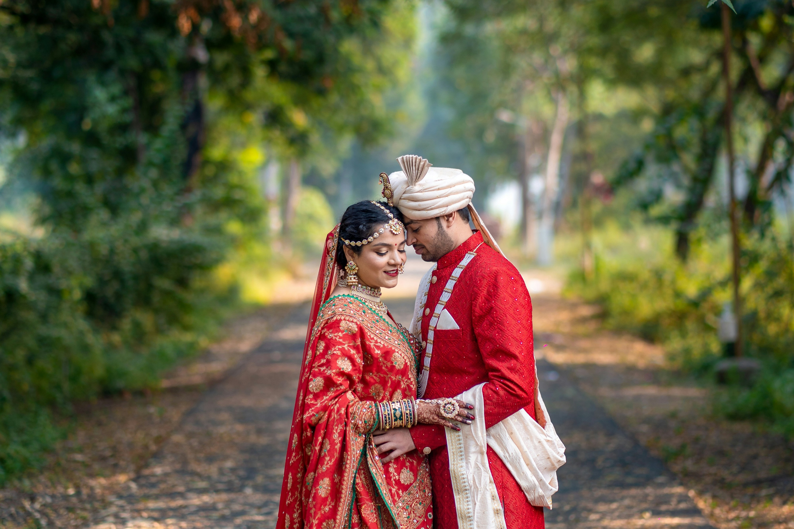
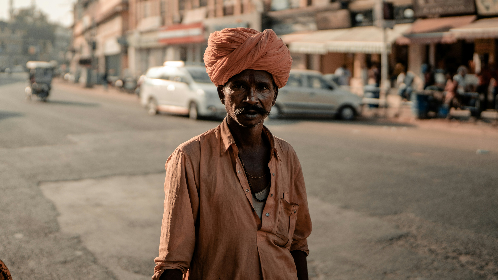
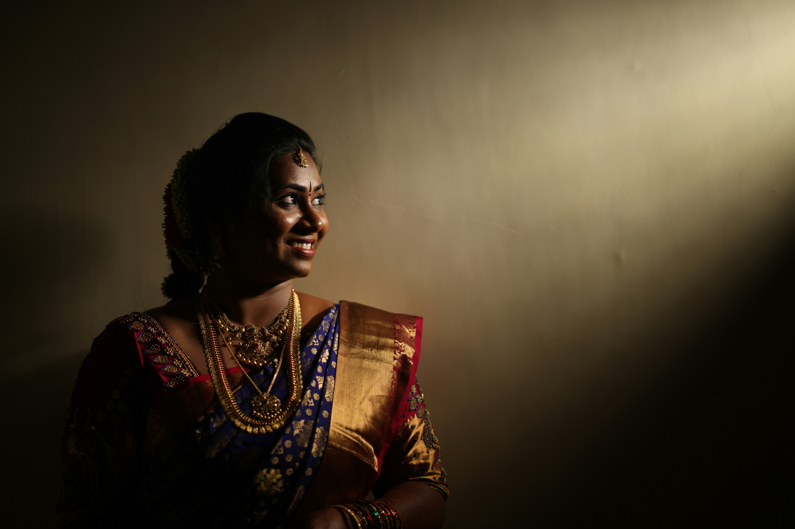

The ShutterSoul Experience

Fine Art Portraiture
Capturing the soul in every portrait, making memories timeless with a touch of elegance.

Candid Wedding Photography
Immortalizing the raw emotion and beauty of your big day with candid shots and a unique touch.

Street Soul Stories
We capture life’s essence through street photography, telling stories through moments.

Portrait Photography

Wedding Photography